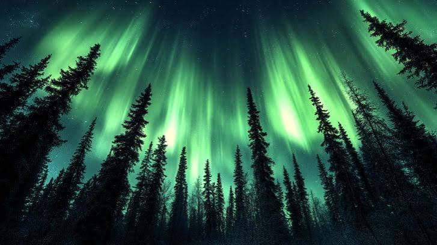
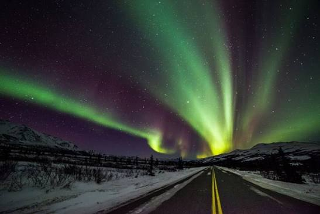
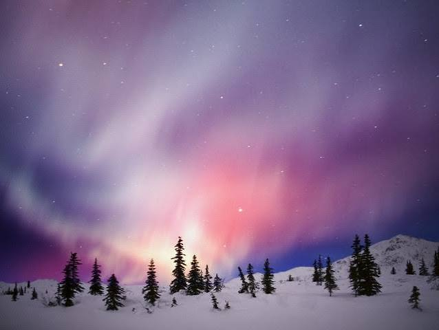
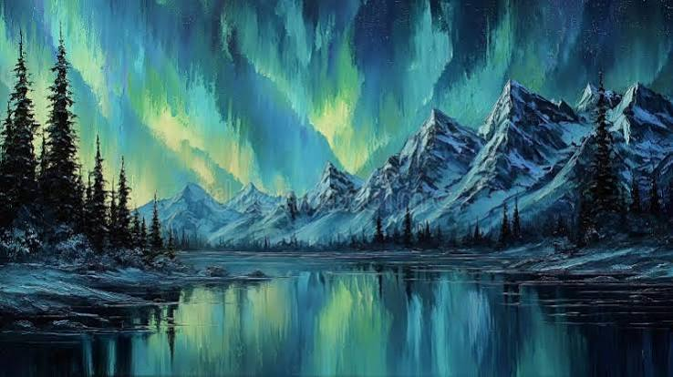

Саамы
Саамы верили, что сияние — это души предков, танцующие на небе. Считалось, что шуметь и насмехаться над авророй нельзя — это могло разгневать духов.
Аврора Бореалис — одно из самых завораживающих явлений природы на Земле
Северное сияние, или аврора бореалис (Aurora Borealis), возникает, когда заряженные частицы солнечного ветра сталкиваются с атомами и молекулами газов в верхних слоях атмосферы Земли. Магнитное поле планеты направляет эти частицы к полюсам — именно поэтому сияние чаще всего наблюдается в высоких широтах.

«Небо вспыхивает зелёным, фиолетовым и розовым — и кажется, что сама Вселенная танцует над твоей головой».
Процесс можно описать в несколько шагов:
Цвет сияния зависит от того, с каким газом столкнулась частица и на какой высоте это произошло. Кислород на высоте около 100–150 км даёт зелёный свет, а на высоте 200–400 км — красный. Азот отвечает за синие и фиолетовые оттенки.
Сияние бывает очень разным: от едва заметной зелёной дымки до ярких всполохов, занимающих всё небо. Ниже — таблица основных цветов и их причин.
| Цвет | Газ | Высота | Комментарий |
|---|---|---|---|
| Зелёный | Кислород | 100–150 км | Самый частый цвет |
| Красный | Кислород | 200–400 км | Встречается реже, на больших высотах |
| Синий / фиолетовый | Азот | до 100 км | Хорошо виден на фото с длинной выдержкой |
| Розовый | Азот + кислород | нижние слои | Появляется на краю сияния |
Форма и движение сияния зависят от изменений магнитного поля и потоков частиц. Из-за этого картинка на небе постоянно меняется — иногда за несколько секунд.



Лучшее время для наблюдения — с сентября по март, в ясные морозные ночи, вдали от городских огней. Ниже — несколько известных мест.
Подробнее о прогнозе сияния можно почитать на сайте геофизического института Аляски.
Посмотреть прогноз аврорыKp-индекс — это число от 0 до 9, показывающее уровень геомагнитной активности. Чем выше значение, тем южнее можно увидеть сияние. Для Мурманска часто хватает Kp 2–3, а для средней полосы России нужен Kp 7 и выше.
Северное сияние веками вдохновляло людей. Разные народы объясняли его по-своему.
Саамы верили, что сияние — это души предков, танцующие на небе. Считалось, что шуметь и насмехаться над авророй нельзя — это могло разгневать духов.
В финской мифологии сияние называли «лисьим огнём» (revontulet). По легенде, волшебная лиса бежала по заснеженным сопкам, и её хвост высекал искры, которые взлетали в небо.
Скандинавы считали сияние отблеском доспехов валькирий, которые несли погибших воинов в Вальхаллу.